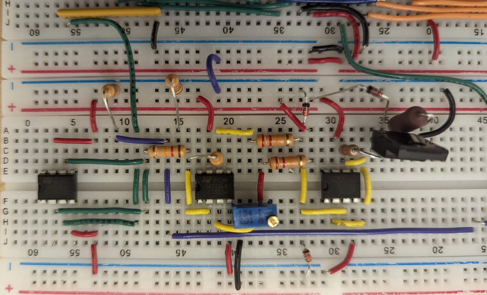

Closed-Loop Motor Speed Controller
Project Images
Learning
- Electrical circuit design fundamentals, breadboard prototyping.
- Digital logic including d-latches, shift registers, counters.
- Analog circuits including analog to digital converters, operational amplifiers, transistors.
- Electrical noise filtering.
Project Overview
As the final project in ENPH 259: Experimental Techniques, students were tasked with building a circuit to control the RPM of a motor. The project used extensively a variety of different electrical components such as DACs, ADCs, pulse generators, and latches, among others. Through this project, I developed several skills in circuit design that gave me a solid foundation for further projects in electronics.
Circuit Walkthrough
Above is the final circuit diagram. The motor is located on the top left of the diagram. We can split the circuit into five parts.
The Motor

A disk containing 10 equidistant slits is attached to the motor. As the motor spins, the disk spins with it. Each slot lets light in from an LED to a phototransistor, creating a clock pulse.
As there are 10 slits, one full turn of the motor produces 10 pulses. We can relate how fast these pulses are recorded to how fast the motor is spinning.
A flyback diode is connected in parallel to the motor to protect the circuit from voltage spikes caused by the inductive load of the motor.
D Latch and Counter

The pulses are then sent to two 4-bit counters that are connected to each other. The outputs of the counter are wired to a 7 segment display for visualization.
The value of the counter is also sent to an 8-bit D latch for storage. Periodically, a reset pulse is sent to the D latch in order to reset the number of pulses counted. The amount of pulses that are recorded
between each reset pulse is what we use to determine the RPM of the motor.
The output of the latch is also connected to a 7-segment display for visualization.
RESET Generator and Latch

Three components make up the RESET period generator: a measuring period generator, a delay circuit, and a RESET pulse generator.
The measuring period generator uses a Schmitt-Trigger inverter and an RC circuit to generate a period.
The RC circuit serves as the input to the Schmitt-Trigger inverter, and connects to the output through a feedback loop. The periodic charge and discharge cycle of the RC circuit
is what generates the measuring period. The inverter "squares" up the output of the RC circuit into a high or low signal.
We choose to use a Schmitt-Trigger inverter due to its hysteresis property, which means that the voltage at which the inverter switches from
low to high is different from the voltage needed to switch from high to low. This is incredibly important when trying to convert noisy analog signals to high or low signals.
Due to hysteresis, the output will not constantly flip back and forth between low and high due to noise. The output is further
fed through another inverter for noise protection before going to the clock input of the D latch.
We next feed the measuring period output into a delay circuit, whose purpose is to add another short delay using an RC circuit. This signal
is then sent to the reset pin of the D latch. We introduce this delay to ensure that the counter will reset only after all values have been stored in the
D latch.
The delayed wave is then passed through another RC circuit and an inverter. This RC circuit, however, has a capacitor value in the picofarads, ensuring a very small time constant and thus very fast charge/discharge times.
When passed through an inverter, the effect is an extremely thin square wave akin to a pulse. This will serve as the reset signal to the counter. A short pulse is desirable as a long pulse would reset the counter multiple times.
The signal is then passed through another inverter to ensure that the polarity of the output matches the original signal polarity.
Digital-to-Analog Converter
The value stored in the D latch has to be converted to an analog signal to control the motor. This was achieved using a R-2R ladder.
The R-2R ladder is a simple DAC design that uses resistors of only two values (R and 2R) to convert a digital input to an analog voltage.
Each bit of the digital input is connected to a node in the R-2R ladder. Depending on whether the bit is high or low, the node will either connect to a reference voltage or ground.
The resistors then create a voltage divider network that outputs a voltage proportional to the binary value. The ladder structure ensures that each bit contributes a voltage proportional to its significance in the binary number.
At the output, the currents from each branch of the ladder are summed together to produce the final analog voltage. The combined voltage is proportional to the digital input scaled by the reference voltage.
A buffer amplifier is used at the output of the R-2R ladder to prevent loading effects that could alter the output voltage.
This ensures that the output voltage remains stable and accurate regardless of the load connected to it.
Protections and Error Signal Amplifier

Next, the output of the DAC goes through an error signal amplifier, a protecting buffer, and finally a power transistor before being sent to the motor.
The error signal amplifier compares the output voltage of the DAC (the actual speed) with a reference voltage set by a potentiometer (the desired speed).
The difference between these two voltages is the error signal, which indicates how far off the motor speed is from the desired speed.
The measured voltage from the DAC is sent to the inverting input of an operational amplifier, while the reference voltage from the potentiometer is sent to the non-inverting input.
The operational amplifier has negative feedback. Therefore, the overall effect is that the operational amplifier will act to minimize the difference between the two inputs.
As the measured voltage from the DAC is connected to the inverting input, if the measured voltage is lower than the reference voltage, the output of the operational amplifier will increase. If the measured voltage is higher than the reference voltage, the output of the operational amplifier will decrease.
The potentiometer allows the user to set the desired speed by adjusting the reference voltage.
Our amplified signal is then sent into a protecting buffer, which uses two diodes to restrict the output to be between 5V and 0V. The diodes have a breakdown voltage of 5V.
This is important as the power transistor that drives the motor can only handle voltages between 0V and 5V. Any voltage outside this range could damage the transistor.
Before the signal is sent to the power transistor, it is also passed through a buffer to ensure that the rest of the circuit is not affected by the load of the motor.
The BJT power transistor acts as a current amplifier, allowing a small base current to control a much larger current flowing from the collector to the emitter. Particularly, the BJT controls the current from the 15V supply connected to the motor.
Results
Overall, this project was a success. The motor speed could be controlled effectively using the potentiometer.
The RPM could be increased or decreased smoothly without any noticeable lag. Moreover, the circuit was stable and did not exhibit oscillations or instability in motor speed.
This was a great beginner project that introduced me to many fundamental concepts in electronics and circuit design.